A gothic French castle frozen in time by dark alchemy. Perform four
elemental rituals, forge a Wonder Weapon sword in the armory, activate
the Blood Altar under the great hall, and face the Count in an
epic three-phase showdown. Best attempted with 4 players.
26Quest Steps
3–4hAvg Time
★★★Difficulty
4-PlayerRecommended
🎒
Recommended Loadout
Pre-Game
💊Perks Priority
Juggernaut
Maximum HP essential — boss 1-shots at base HP
Elemental Pop
Random ammo mod on every shot — efficient for rituals
Speed Cola
Ritual steps require fast weapon swapping
Deadshot Daiquiri
Auto-aim on Count's face weakpoint in Phase 2
🧠Gobblegums
Perkaholic
This map benefits enormously from all perks early
Reign Drops
All 4 Power-ups — major time saver on ritual steps
Crate Power
Instant PaP on any mystery box WW pull
Weapons
SVD (Sniper, PaP Tier 3)
Long range essential for castle courtyard sections
Elemental Sword (WW)
Your chosen element — craft in the armory
🔮Ammo Mods
Cryo-Freeze
Freezing zombies is required for the Ice ritual step
Napalm Burst
Required for Fire ritual step
⚠
Squad Strategy Critical
Citadelle des Morts has steps where all 4 players must be in
different map areas simultaneously. Assign roles before entering:
one player per quadrant of the castle during ritual activation.
⚡
Power the Castle
Rounds 1–5
STEP 01
Activate the Alchemist's Furnace in the Lower Dungeon
The castle's power source is an ancient furnace in the lower dungeon
(beneath the Great Hall). Throw any Field Upgrade at it to ignite.
The furnace powers the castle's lighting and unlocks the PaP
machine in the Upper Armory.
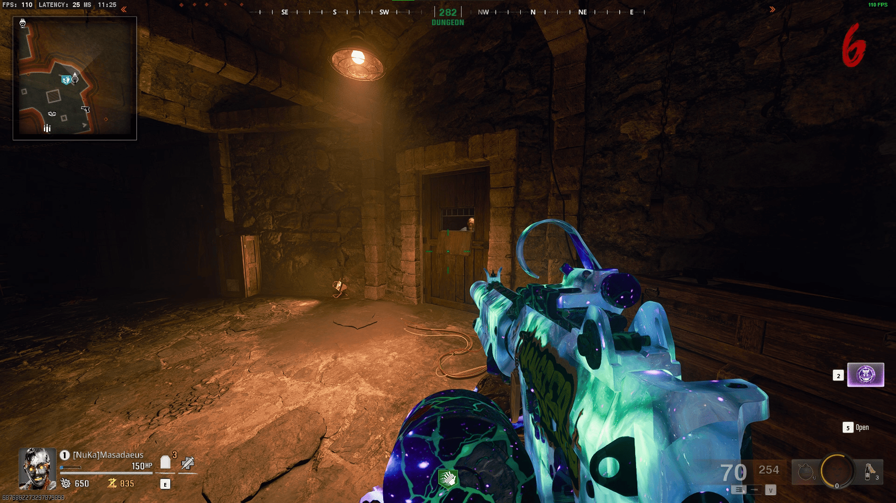
RequiredUnlocks PaP
STEP 02
Collect the Alchemist's Journal (Quest Trigger)
A leather-bound journal with a glowing purple rune on its cover sits
on the reading stand in the Castle Library (east wing,
second floor). Reading it starts the main quest and reveals the four
elemental ritual locations.
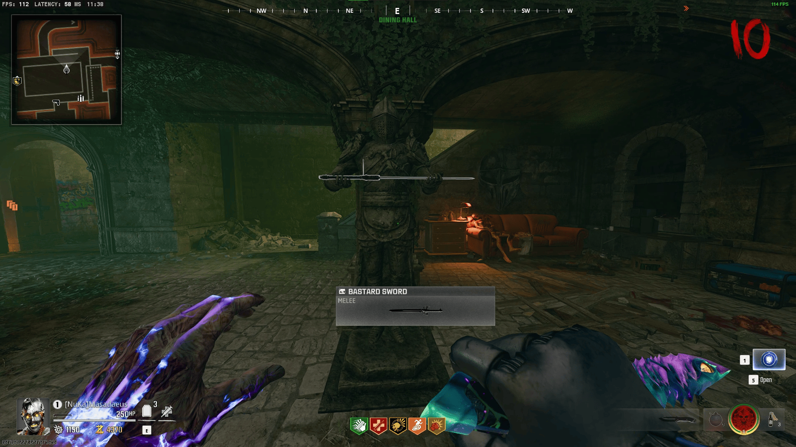
Triggers Quest
STEP 03
Pack-a-Punch your main weapon to at least Tier 2
The ritual steps begin spawning elite enemies at Round 8+.
Tier 2 PaP is the minimum — Tier 3 recommended before
beginning the Fire and Shadow rituals.
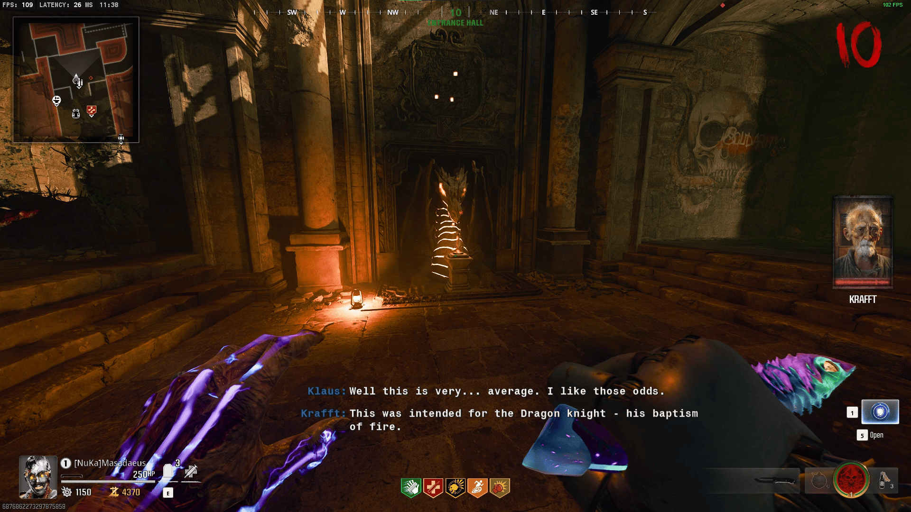
Required
🔮
Complete the 4 Alchemical Rituals
Mid-Game
Four elemental ritual sites are scattered throughout the castle. Each ritual
requires a specific ammo mod and a unique challenge. Complete them in
any order — all four must be done before accessing the Sword Armory.
🔥
Fire Ritual
Location: North Tower Ammo Mod: Napalm Burst Challenge: Kill 25 zombies with fire damage on the ritual circle
❄
Ice Ritual
Location: East Courtyard Ammo Mod: Cryo-Freeze Challenge: Freeze and shatter 20 zombies on the ritual circle
🌑
Shadow Ritual
Location: Lower Catacombs Ammo Mod: Brain Rot Challenge: Convert 10 zombies to fight each other on the circle
⚡
Storm Ritual
Location: West Battlements Ammo Mod: Dead Wire Challenge: Chain stun 5 zombies simultaneously 4 times
STEP 04
Complete the Fire Ritual — North Tower
Equip Napalm Burst on your weapon. Stand inside the burning
circle at the top of the North Tower and kill 25 zombies using
fire damage. The circle must stay ignited — re-ignite it by
shooting the brazier beside the altar every 30 seconds.
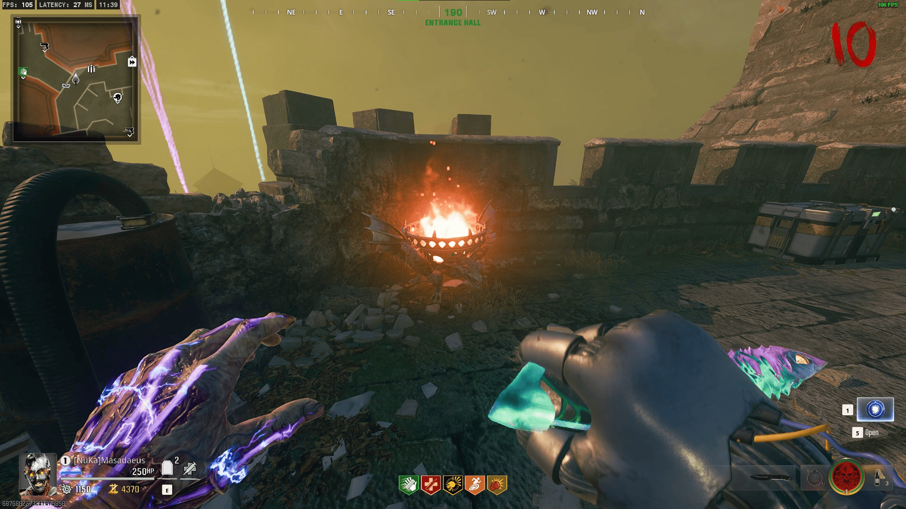
Ritual 1Timer on brazier
Climb the North Tower stairs (buy the 1000pt door near the chapel).
Interact with the stone altar at the top to activate the ritual circle.
Equip Napalm Burst ammo mod on your weapon.
Kill 25 zombies with fire damage within the circle boundary. Kills outside the circle don't count.
Every 30 seconds the circle dims — shoot the stone brazier to re-ignite it.
On completion a Fire Essence Vial appears on the altar. Collect it.
💡 Tip: Stand at the circle's centre and let zombies walk into you — less positioning needed.
STEP 05
Complete the Ice Ritual — East Courtyard
Equip Cryo-Freeze ammo mod. Freeze and shatter 20 enemies
on the ice ritual circle in the East Courtyard (beside the
horse stables). Freeze them with Cryo, then melee or shoot
to shatter while frozen.
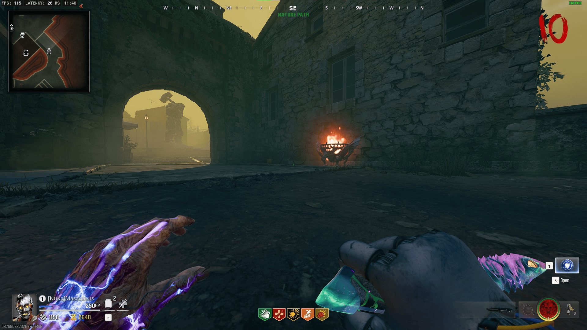
Ritual 2Freeze then melee
STEP 06
Complete the Shadow Ritual — Lower Catacombs
The catacombs ritual requires Brain Rot conversions.
Convert 10 zombies on the shadow circle. Converted zombies
must fight and kill other zombies within the circle —
passive conversions outside the circle don't count.
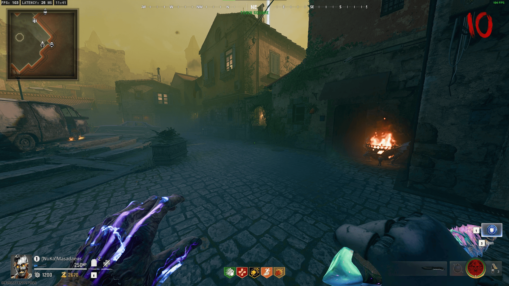
Ritual 3Tight space
Access the Lower Catacombs via the trapdoor in the wine cellar (buy the 1500pt door).
Activate the ritual circle — it pulses with dark purple energy.
Equip Brain Rot ammo mod.
Stand just outside the circle. As zombies enter it, shoot them once with Brain Rot to convert them.
Converted zombies will automatically attack others. You need 10 conversions — they don't need to win their fight.
Collect the Shadow Essence Vial from the altar after the 10th conversion.
⚠ The catacombs corridor is narrow. Place a Proximity Mine at the far end to prevent behind-flanks.
STEP 07
Complete the Storm Ritual — West Battlements
Equip Dead Wire ammo mod. On the West Battlements, chain-stun
5 or more zombies simultaneously using Dead Wire electricity.
This must happen 4 times total to complete the ritual.
Requires zombie density — let them bunch up first.
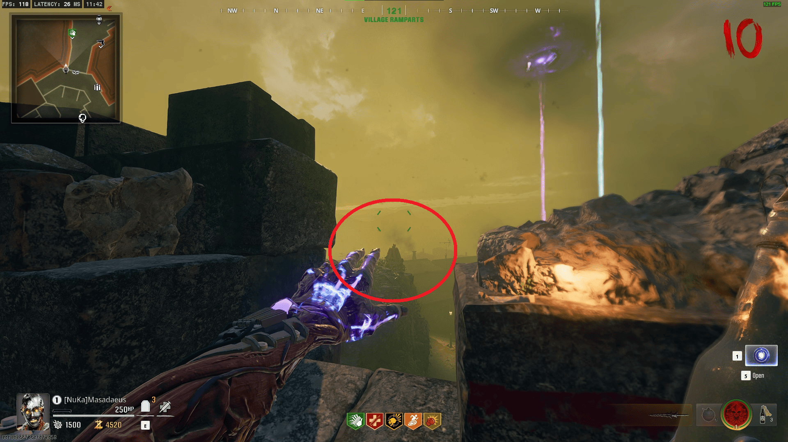
Ritual 4Easier with crowd
STEP 08
Deliver all 4 Essence Vials to the Grand Altar in the Great Hall
Take the Fire, Ice, Shadow, and Storm vials to the large stone altar
in the centre of the Great Hall. Place them in their corresponding
coloured slots simultaneously (in squad, one player per vial;
solo, interact four times in quick succession).
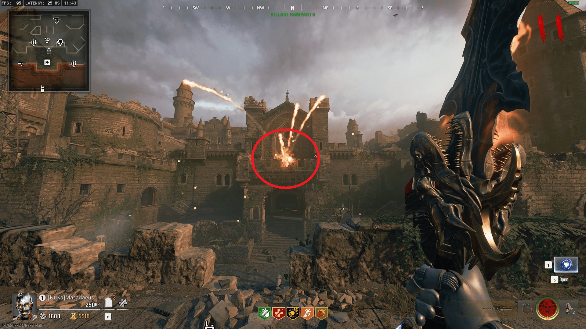
RequiredSimultaneous in squad
⚔
Forge the Elemental Sword
Mid-Game
💡
Each Player Gets One Element
In a 4-player squad, each player can forge a different elemental variant —
Fire, Ice, Shadow, or Storm. In solo, you forge whichever element you
completed most recently. All variants are effective against the boss.
STEP 09
Retrieve the Sword Blank from the Upper Armory
After placing the vials on the Grand Altar, the Armory door
unlocks. Each player must retrieve their own Sword Blank from
the weapon racks inside, then return to the forge.
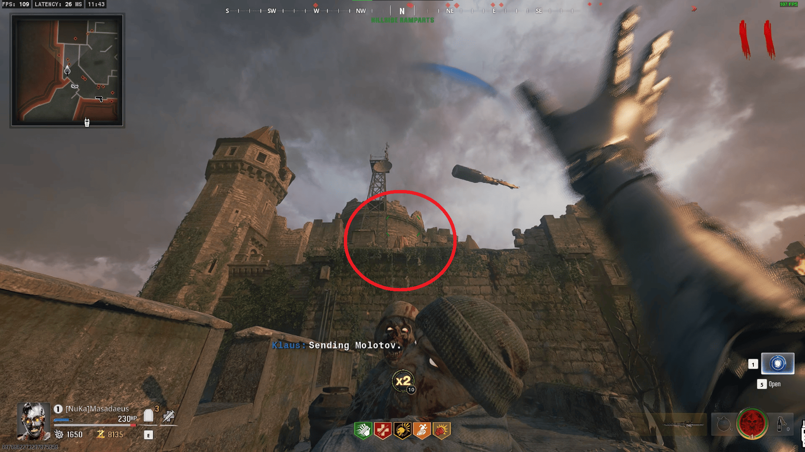
Required
STEP 10
Temper the sword at the Elemental Forge
Take the Sword Blank + your chosen Essence Vial to the
Elemental Forge in the castle's blacksmith
room (west wing, ground floor). Insert the vial first, then
place the blank on the anvil. Hold interact for 5 seconds.
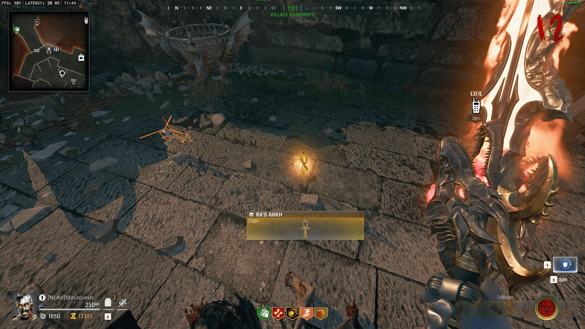
Wonder Weapon
STEP 11
Kill 50 enemies with the Elemental Sword to unlock alt-fire
Your elemental sword starts in basic mode. After 50 kills with it,
the sword "awakens" — gaining an alternate elemental projectile
attack (hold Melee button). This is critical for the boss fight.
Upgrade WW
🩸
Activate the Blood Altar
Late Game
STEP 12
Collect the Count's Portrait from the Trophy Room
A specific portrait in the Trophy Room (north wing, third floor)
hides the Blood Altar trigger. Interact with it three times —
each time reveals more of the hidden text beneath the painting.
Required
STEP 13
Bleed all 4 elemental swords on the altar's rune channels
The Blood Altar is in the sub-basement of the Great Hall
(revealed by the portrait sequence). Each player must perform
a melee attack inside their respective rune channel
(coloured channels match sword elements). Must be done simultaneously.
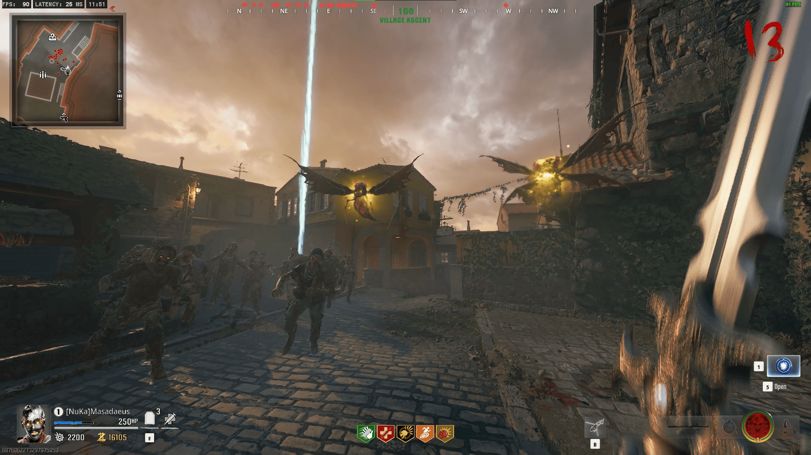
All 4 PlayersSimultaneous
STEP 14
Survive the Blood Altar lockdown (3 waves)
After bleeding the swords, three waves of elite enemies
(Amalgams + Warlocks) spawn in the sub-basement. You
cannot leave until all three waves are cleared.
Beamsmasher (from another player) or elemental swords work best here.
Survive 3 WavesNo escape
STEP 15
Stock up before the Great Hall boss portal opens
You have two full rounds after the lockdown. Buy Max Ammo,
re-up all perks, and ensure all players have Tier 3 PaP.
This is your last chance before the boss.
Prep
💀
Boss Fight — The Count
End Game
STEP 16
Enter the Great Hall Boss Arena via the activated portal
All players must enter the arena before the 20-second window closes.
Required
STEP 17
Defeat The Count — 3 phases
See the boss phase guide below. The Count is immune to conventional damage except during his elemental vulnerability windows.
Boss Fight
🧛
Count Dragoranov — The Undying
An immortal alchemist fused with the Dark Aether. Requires elemental sword damage to defeat. Immune to conventional weapons during protected phases.
1
Phase 1 — Elemental Guard (100% → 70%)
The Count is surrounded by a rotating elemental shield cycling
through all four elements every 10 seconds. Only the matching
elemental sword damages him while that element is active.
Watch the colour of his shield aura — match it to your sword
element and attack during that window. Non-matching swords bounce off.
2
Phase 2 — Bat Swarm (70% → 35%)
The Count summons a bat swarm that blinds all players for
8 seconds. Lie prone immediately when the swarm starts
— it reduces blind duration. While blinded, shoot at the
glowing red dot (his face weak point) — Deadshot Daiquiri
helps aim here. The shield cycling speed doubles.
3
Phase 3 — True Form (35% → 0%)
The Count reveals his true monstrous form — all elemental
shields drop. Every elemental sword now damages him
simultaneously. All players unload everything.
He still spawns Warlock adds every 30 seconds — one
dedicated player should handle add control while three
focus DPS. This phase ends quickly with 4 players.
🏰 Boss Survival Tips
In Phase 1, call out the current element — colour-coded: Orange = Fire, Blue = Ice, Purple = Shadow, Yellow = Storm.
Keep moving in a wide circle around the boss — the Count's melee attacks only track in straight lines.
Revive immediately. In Phase 2, a downed player during blind is almost unrecoverable.
In Phase 3, keep one player near the portal spawn point to intercept Warlocks before they spread.
The sword alt-fire (charged projectile) does 3× normal damage in Phase 3 — use it constantly.